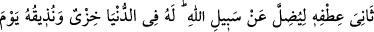
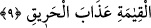
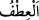
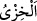
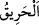
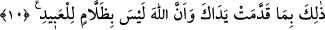

veya vahye dayanan bir delile tutunmadan, bilakis bu üç husus olmaksızın sırf taklid ve
tartışma için Allah Teâlâ hakkında mücâdele eder. Bu ifâde mücâdele eden kimsenin
Allah hakkında bilgisizlik konusunda ileri gittiğine şehâdet etmekte, onun sapıklık ve
dalâlete daldığını tescil etmektedir. Âyette bahsedilen kimse Ebû Cehil’dir
9. Allah yolundan saptırmak için yanını eğip bükerek (kibir ve azamet içinde)
Allah hakkında tartışmaya kalkar. Onun için dünyada bir rezillik vardır; kıyâmet
gününde ise ona yakıcı azabı tattıracağız.
“Allah yolundan saptırmak için” Yâni mü’minleri hidâyetten dalâlete çıkarmak ya da
kâfirleri dalâlet üzere sâbit kılmak için… O her ne kadar bunun saptırmak olduğunu
îtiraf etmese de maksadı Allah’ın yolundan saptırmaktır. “Yanını eğip bükerek (kibir ve
azamet içinde) Allah hakkında tartışmaya kalkar.” “Itfü’l-insân” İnsanın başından
baldırına veya ayağına kadar olan yan tarafı demektir. Şeyhzâde der ki: “__WORD__ insanın
bir şeyden yüz çevirirken eğip büktüğü ve meylettirdiği yanı demektir. Yanını eğip
bükmek, boynunu bükmek ve avurdunu şişirmek gibi kibirlenmekten kinâyedir.
el-Celâleyn’de bu ifâde hakkında “tekebbür gösterip boynunu bükerek” der. Farsça
tefsirde “Eteğini toplamış, kaldırmış, demektir. Bu, tekebbürden kinayedir ki
mütekebbir, gerek iyi gerekse kötü olsun, her şeyden eteğini toplayan kimsedir.” der. el-
İrşâd’da ise “yanını bükerek, yüz ve sırt çevirerek, kibirlenerek…” der.
“Onun için dünyada bir rezillik vardır;” “__WORD__ alçaklık ve rezillik demektir. Yâni
yaptığı sebebiyle onun için dünyada bir rezillik vardır. Bu da Bedir gününde onun
öldürülmesi ve hakir kılınmasıdır.
“Kıyâmet gününde ise ona yakıcı azabı tattıracağız.” Âyetteki “__WORD__ (yangın)”
kelimesi, yakıcı anlamındadır. Yangın ateşten ibâret olması bakımından bu ifâdenin,
sonucun sebebe izâfe edilmesi kabilinden olması da mümkündür. Yine bu ifâdenin
aslının “el-azâbü’l-harîk” olup mevsûfun sıfatına izâfesi kabilinden olması da câizdir.
10. İşte bu, önceden yapıp ettiklerin yüzündendir (denilir). Elbette Allah
kullarına haksızlık edici değildir.
“İşte bu,” yâni ona kıyâmet gününde: İşte dünyadaki bu rezil olma ve âhiret azâbı